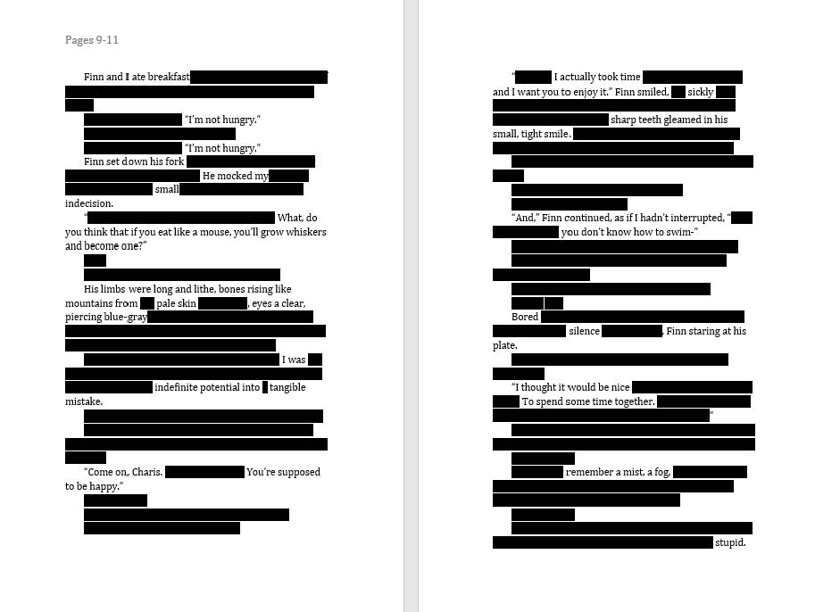

I wake up with moving skin. In the night, it’s become a living being. My lover’s warmth seeps my arm, and I feel it from outside of myself. They ask me about my dreams and I don’t tell them.
Weeks later, I stand in front of a Dalí painting and almost have a panic attack. The mania rises, compounds. I still it with my breaths, but it keeps getting higher. I can’t pull myself away.
A friend once told me the way LSD changes your brain chemistry. He gets caught in simple, repetitive motions, still moments. Particles of the drug release into his system, irrevocable embedded into him. He falls into the clinking of a spoon against a cup, the swirling of the cream and coffee. A moment turned more lucid, more evocative than reality.
I hadn’t really believed him, at the time. But the painting moves. It pulls me in. The mythical texture of the paint—no photograph could ever do it justice. I lose myself in it and lose my partner in the gallery. Like so many times before, we miss each other. I thought you needed space; I wanted you there. I thought it didn’t matter; it was a small moment that cut deep.

Photograph by Emily Garcia, me and my partner, April 2019
This is a softer opening. Warm skin and open lips. Gold-tinted hair and sleepy mornings. Slanted sunlight. Two people who love each other, two people who hurt each other, two people who learn and grow together.
Aches and pains buried, crumbling. A moment of stillness before confession. Terrified breath. Streaked hands when we dig them out. We bury them again, lay them to rest. Cultivate a tenuous reconciliation. We grow, reach each other again.
Work that is difficult, heart-wrenching, rewarding: but we don’t let it kill.
Let’s look at another opening. What my life used to be like before I learned to live it better.

Before It Bites, personal essay, July 2018
So. My brother. The humanitarian, empathetic soul, who didn’t have a violent bone in his body. My brother, who has made my cry more than any other person on earth.
In an image more vivid than memory, more crystalline, with thick and vibrant strokes:
His expression visibly darkens. He says, “I already try hard enough not to hit mom.” His voice a cold shock. It fills me with a muddy feeling of fear.

And in a memory more semantic—nowhere in my journals, but folded in me—my brother grabs and shakes my shoulders. His face shadowed, inscrutable. His hands close around my throat. He lifts me toward the sky and my feet kick desperately for solid ground.
At that time, the dream of my brother felt entirely unexpected. I didn’t know I was being gaslit, slowly traumatized. All I knew is that I had a nightmare and an archetype. A vision overlaid, not of who he was, but of who he could be. Who he was sometimes. Who he was to me.

Digital drawing of Finn, an archetypal character, circa 2018
It’s time to talk about the dog. And this is where the danger starts. The spectre I still dance around. Too easy to turn sentimental, molded by circumstance.
His jaws, closing lengthwise along my mouth and nose. He leaves an ice-white scar on my upper lip. I’m ten, or maybe twelve.
His jaws, closing around my leg. Older now, fifteen. This time, three little scars in a rough semicircle.
I run away from home for three days. When I come back, my mother doesn’t speak. What kind of monster would treat an animal like this? she seems to ask. I don’t have the heart to ask them to put him down; only to keep him behind a gate. What kind of monster would blame him?
The dog saves my brother’s life but ruins mine. When he barks, teeth gleaming, they blame me. When he fixates on my heels, lunging and snapping, they blame me.
This is why, for a period of my life, every conversation with my brother made me cry. Why entering the blue house with the white accents made my breath catch in my throat, my muscles tense—the beginning of a fight or flight response. Why, even now, I feel that a simmering undercurrent of that house wants me dead.
It helps to see events from outside yourself—for your friends to say, that happened? That’s really fucked-up. But there’s still a part of yourself that says, yes, that would be true, if it happened to anyone else. But not when it happens to me.
Nuance is both essential and dangerous. I believe that no people are truly bad, that we’re all doing the best we can living on this spinning sphere of rock we call home. But to fully accept someone’s humanity, you first have to face the pain they caused you head-on.

"The God of Small Things," Arundhati Roy
For a long time, I was too close. My house, with its fog catching in my chest, seemed normal. I had spent so long thinking of my brother as a good person that I couldn’t reconcile the suffering he caused me. The only answer, then, was that I was the problem.
Even while I was complacent, my subconscious struggled for air. Even while I could only one set of words to describe him, my nightmares cast light on a side of him I only ever saw in shadow. Look at this, they said, when I found myself crying in the kitchen, in my bedroom, on the neighbourhood walks we sometimes took together. Look at his hands wrapped around your throat.

Photograph, me and my brother, circa 2005
I was having nightmares, I knew, because a capital-C conversation loomed. Normally, I was borderline obsessive about addressing issues before they grew. I would pass over lines of communication—a pencil pressed down into paper again and again until it tears.
But this—I didn’t have words for it. It was too nebulous, too fundamental. And there seemed to be danger in giving this spectre life: in giving it breath and form.
Tony McAleer says,

"The Cure for Hate," Tony McAleer
His memoir is about white supremacy—but what he describes is imbued, not so separate in ourselves. Fallacies of ego leading to lack of empathy; disconnect in close relationships; people who aren’t fundamentally bad doing bad things.
Nothing is really separate. And into my new, adult relationships, I carry my terror of inescapable little hurts. Not for their concrete impact—but for what they represented. I had read too much literature about the universe as a tenuous organism, a thoughtless word or action enough to change a relationship fundamentally. Their implications can be gut-dropping.
My partner leaving me alone a night I was upset, thinking I wanted space. A small gift treated carelessly—(and wasn’t this why I had dreamt of origami, folded so carefully, set on fire?)
I embodied some of my old fatalism, the same edges that couldn’t be smoothed over. There’s no point in talking about it, said a cutting sliver. Your partner says they love you—and that might be true. But what’s the point if they don’t love you the way you want to be loved?
A nerve, reaching out through my fingertips, wrapping itself in a part of myself so deep I can’t touch it. Fear of being that same way again—of trying to speak, and not being heard.
My partner hadn’t done anything wrong. They showed me their love a thousand-fold, in other ways, and it was selfish to ask for more. This was another reason, I thought, to keep this to myself. This dark, childish part of myself—a destructive, tempest-like impulse. Let him wreak havoc. I’ll keep him contained in me. And if he sends nightmares rising up, then so be it.
But things have a way of breaking. They always do. And it’s on a lucid, sun-drenched day that I stand in front of the painting at the Dalí. I may not be asleep, but I might as well be. I stand captured by a painting while the world whirls around outside. The sheer contrast, the ridiculous of the situation, does not escape me. This has to end.
Your brother hurts you, one nightmare says. You’re hurting yourself, says another. And no matter how carefully-constructed the justifications, the logic, the decisions of who I want to be and how I want to be—the nightmares always win.

Photograph by Freddie O'Brion, my childhood home, April 2020
To talk—a painstaking, blasphemous ritual. Even when you’re sick of the sound of your own voice. Even when you don’t want your words to be important.
You give shapes to them. You give names to them. You cradle them and nurture them; you smother them; you leave them in the woods to die.
I love you. You know this, my partner says, the way they had so many times before. Except this time, it meant something slightly different. Not in essence, but in practice. We’ll work on it.

Photograph (expedia.com), The Dalí Museum, St. Petersburg, FL
It’s my belief that no emotion, no thought, no dream, is inherently without value. They calibrate your inner world. They signal, they cycle, they demand to be felt, to be heard for what they have to say. They may tell you where to dig deeper. They may even do the work for you.
My nightmares are never pleasant, only sometimes decipherable. Many of them feel more real than my memories; and, by any significant measure, they are.
My mother’s voice on the telephone, where we speak civilly and coldly to each other, means little in comparison to the dream where she tries to break into my barricaded room.
The room I stayed in over one summer, with its cheerful bedding and low window, means less than the pale, ghostly figure who walks through it, leading my mentor by the hand, through a door that doesn’t exist. The door, somehow, leads to a place like death, or a place deeper than death.

“Robbers and Angry Brothers,” dream journal entry, June 2016
To myself, I can only say: be grateful to your nightmares. They keep you safe.